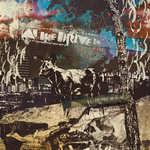
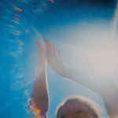
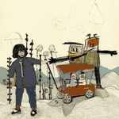
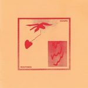

Quick Takes (May 2017)
At first, Carl and I thought that this month's Quick Takes was going to be entirely made up of records released on May 5. Ultimately, we gave the rest of the month a chance and found a lot of music worth recommending.
This time, I was the more enthusiastic participant, given that more than half of my choices were very favorable. I was quite impressed with grunge-era romantics The Afghan Whigs' second comeback record, while Girlpool's stellar Powerplant reimagines a time that is consonant with the Greg Dulli-backed project. Even if Carl wasn't as eager with his choices, however, he did give glowing praise to Pumarosa's viciously artful debut, The Witch. The one we can both somewhat agree with is At the Drive-In, a band that we both grew up listening to even if his take was far more forgiving than mine would've been.
What were your favorite albums during the month of May? Anything we didn't get to review on our site that we should've? You can always reach us on facebook, or on our official twitter page. - Juan
...
 The Afghan Whigs
The Afghan Whigs
In Spades
(Sub Pop)
The stylish romanticism of The Afghan Whigs is still very much alive on In Spades. Their second release after their 2014 comeback effort Do the Beast, the Greg Dulli-led project supplies a touch of chamber instrumentation without dismissing their histrionic alternative rock. Theirs is an inimitable convergence of rhythm and blues with tough-as-nails balladry, and it hasn’t aged one bit. A lean 35 minutes, the whole of In Spades eases us into Dulli’s gripping and emotionally fraught accounts, offering a noble reason for us to feel some sympathy for him after letting go some of his defeatist guise. The Whigs’ songwriting has naturally evolved without sacrificing any of their prime flair: from the piano-led Demon in Profile to the rousing power ballad Into the Floor, Dulli’s tormented pleas are still a show-stopping display of ferocity mixed with keen sensitivity. In a year that’s supplied a bevy of notable releases coming from some of nineties’ most iconic players, In Spades is undoubtedly one of, if not, the most mightily open-hearted. [8/10] Juan Edgardo Rodríguez
At The Drive-In
in•ter a•li•a
(Rise Records)
in•ter a•li•a follows on from Relationship of Command a full 17 years after its frenzied post-hardcore acrobatics announced themselves, but you could be forgiven for thinking that time had stood still throughout that period in an At the Drive-In practice room. When listening to this record for the first time, it reminded me of Death From Above 1979’s 2014 return after a comparatively nominal nine year hiatus, where a niche limb of a frantic body of rock music kept all of its original meat, bar a couple of unavoidable shroudings of modern-day studio glitz. In•ter a•li•a is almost an exhibition of ATDI striving to keep the same approach that made the El Paso band so invigorating at the turn of the millennium. It’s not a bad thing at all – in•ter a•li•a is a blistering return for the band; a record of thrilling paranoia, agitated by brutal, scissoring guitar riffs and slashing vocals. On a side note, too, I mentioned in last month’s feature just how horrible the track names were on the new Incubus record. The track names on here are phenomenal. [7/10] Carl Purvis
Fazerdaze
Morningside
(Flying Nun)
For the past few years, New Zealand has proven itself to be a goldmine of guitar-pop music. Fazerdaze – the recording moniker of 24 year-old Auckland-based Amelia Murray – is the latest to emerge. Murray’s debut LP, Morningside, is a candid, confessional foray into her mental intimacies, and the fuzzy, ocean-sprayed guitars are the perfect backdrop for her streams of consciousness to unfurl. There is, however, a cleaner edge to this version of bedroom rock, but its Neapolitan mixing results in a less organic sound than you feel could have been achieved with a little less of a sharper edge. The drums and electronics in opening track Last To Sleep detract from the vital components of the song – Murray’s guitar and voice. On the other hand, Misread nails it, Kim Deal-esque in its slackness. Murray’s intimate space is a sun-drenched conservatory, and her willingness to let people into it will make this a reasonably essential summer record. [6/10] Carl Purvis
Girlpool
Powerplant
(Anti-)
Girlpool have grown in leaps and bounds from their debut effort, Powerplant. This dramatic change has already caused a bit of contention for those who admired the Los Angeles duo’s more primitive approach to music on their debut, Before the World Was Big. It’s as if one would subscribe to this wrongful notion that having a full band behind their sincere confessionals would hinder their charm, when frankly, the possibility of it enhancing their unique character always sounded like a likelier bet. And it does! Even if their stripped down beginnings upheld a similitude to the free-spirited pop of K Records, a comparison that tickles any nostalgic funny bone, what’s more shocking about Powerplant is how they’ve been hiding such tuneful songcraft under their sleeves. Both Harmony Tividad and Cleo Tucker adopt from a multitude of musical resources post-1977, though they have a slight preference to distilling the glum introspection of grunge when they’re not jangling their guitars. But ultimately, Powerplant is a hooky, candid and sharp-witted portrait of young adulthood that engages with adept effortlessness. [8/10] Juan Edgardo Rodríguez
Hoops
Routines
(Fat Possum)
Indiana four-piece Hoops have followed up last year’s excellent self-titled EP with a very solid debut LP. Where Hoops the EP provided an almost glacial haze that blurred over translucent, melodic guitars that were from the upper reaches of the jangle paradigm, Routines has without doubt turned up the temperature. It’s a summer record if ever there was one – with even the opening track being named Sun’s Out. It’s a great introduction to the record, where a punchy snare, an uncomplicated bassline and a heat-warped guitar lick combine so easily that it takes a few of Drew Auschermann’s lyrics to be delivered before you even realize they’re there. The blueish hues that accompanied Hoops the EP have given way for the red-orange pastels of summer evenings, reflecting the respective album artworks, which actually makes me wonder if Hoops themselves associated such hues with each record. Ultimately, Routines is a superb collection of effortless songs, and like their closest contemporaries Real Estate earlier in 2017, Hoops have delivered a leading example of guitar pop. [7/10] Carl Purvis
 Land of Talk
Land of Talk
Life After Youth
(Saddle Creek)
If you were to create a fictional narrative of Land of Talk’s career, you could trick anyone into believing that Life After Youth is their expeditious follow-up to 2010’s Cloak and Cipher. Instead, it’s been a full seven years since we last heard of the Elizabeth Powell-led project, due to a series of circumstances that forced her to put her career on pause. At the time, they were riding on the coattails of Arcade Fire, who managed to shine a light on dozens upon dozens of Canadian indie rock bands after the critical success of their debut Funeral. It wasn’t a fluke - occasionally, they were even better than them. So there’s something pleasantly anachronistic about Life After Youth: Powell’s mellifluous voice continues to enchant with a combination of poise and rascal vocal whims (is that a subtle ode to Kim Carnes I hear on the track Loving?), and she still puts focus on grand choruses that lay out generously riveting crescendos. Despite Powell’s resplendent intentions, though, much of the album’s tempered rhythmic momentum gives out the impression that she’s still recovering from the long absence. Some of that punchy vitality has been lost, but never does it obscure Powell’s ability to add bold expressions to her fine-grained accounts. [7/10] Juan Edgardo Rodríguez
LOOM
LOOM
(Silent Cult)
LOOM have been garnering attention on the live circuit for the best part of five years now. Tarik Badwan – brother of Horrors frontman Tarik – has built a reputation for being an angry, sinister animal on stage, but despite the piss-soaked grunge of his band’s debut album, he fails to transfer such malevolence to the record. Opening track Lice is the equivalent of a 2017 re-master of a track from Bleach, but lacks the organic, untapped uneasiness that would allow it to hit the target. Bleed On Me is a track first heard in 2012 and is one of the stronger moments of the album, extravagantly flourishing as opposed to tipping its hat to Bleach once again, but this time conveying a freshness that lionises the band’s sound rather than leaving all authenticity at the door. Nailbender is the album’s key track, leading with a furious metal riff and a maniacal drawl from Badwan. There are some good moments on this record, but there are too many junctures where the sound is auxillary in lieu of the organic angst that gives LOOM its best bits. [5/10] Carl Purvis
 Juana Molina
Juana Molina
Halo
(Crammed Discs)
Every Juana Molina features an crackpot concept worth musing about with great detail. Halo, her seventh release, suggests a spiritual entity that haunts the living with mischievous malice. It’s up to us to decipher its intoxicating mystery, and yet this time around, the Buenos Aires singer-songwriter expresses herself with a clarity that is uncharacteristic of her previous work. There’s always a certain familiarity to her work, as her technique usually consists of fusing together all sorts of recherché sounds with an economy of instrumentation. But never does it feel stuffy or academic - whether its through groove-laced dissonance (Sin Dones), sluggard processionals (Lentísimo Halo) or fractured, tension-filled paranoia (Cosoco), every mercurial transition Molina makes suffuses the mind with a different temperature. Nevertheless, Halo is just as effective when taken purely as an aural experience; just like the symbolic spirit she invokes, her challenging and throbbing entanglements are impossible to turn away from. [8/10] Juan Edgardo Rodríguez
Pumarosa
The Witch
(Harvest Records)
Pumarosa’s spectacularly dexterous, stunningly captivating debut LP is without doubt one of the best records that has dropped this year, let alone this month. The Witch is a many-headed, endless tsunami of creativity that bewitches and beguiles. It is inexorably magnetic, pulling everything in its atmosphere under its spell, with Isabel Munez-Newsome’s enrapturing vocals the enforcer keeping it there. It’s been a few years since we heard Priestess, but it sounds as stunning as ever as one of the keystones of this remarkable debut album. It shapeshifts from fluid noir-funk to rumbling hedonism, ultimately climaxing with a cacophonous pulse of brass and urgency, demonstrating the most elegant and perfectly executed show of sonic acrobatics. The Witch shapeshifts not only throughout the record itself but from within its songs, constantly keeping you guessing and surprising you with the direction it takes. With this record, there is Britpop, Radiohead, Spiritualized, grunge, trip-hop and more basking under an astral, space-rock umbrella, and Pumarosa have turned it all into a contorting, ornamental obelisk. [9/10 - Believe the Hype] Carl Purvis
 Tigers Jaw
Tigers Jaw
spin
(Atlantic)
Tigers Jaw express a profusion of distress from a safe place on spin, their first release under Atlantic Records’ specialized new imprint Black Cement. The story goes that their latest was devised after they lost more than half of its original members, leaving sole members Brianna Collins and Ben Walsh to reinvent the band’s overall sound. To the duo’s advantage, or detriment, there isn’t much a fundamental difference when comparing it to their last record, Charmer. The bulk of spin is serviceable indie rock that relishes on moody, shadowy songcraft, though instead of exploring that unease in new ways, they stick to foolproof, middle-of-the-road choruses and mild guitar hooks that will surely satiate their fanbase. But a band who could easily lit up a faithful audience with tender and yearning emotions is failing to connect on spin, and beginning to show signs of exhaustion, lending themselves to a stately, unambitious format that’s consistent to a fault. [5/10] Juan Edgardo Rodríguez